Located in Kuala Selangor, Selangor Darul Ehsan
Sekinchan, derived from the Chinese name 适耕庄 (Shì Gēng Zhuāng), means "village suitable for farming". Located in the Sabak Bernam district of Selangor, the area is highly celebrated for its fertile land and favorable climate, which support the cultivation of rice, fruits, and oil palm.
Beyond its lush green landscapes, Sekinchan uniquely balances two distinct economies: a thriving agricultural sector and a vibrant fishing industry. It is recognized as one of the major rice-producing hubs in Malaysia, widely associated with exceptionally high paddy yields across approximately 4,300 acres of dedicated cultivation land.
Due to its highly efficient farming methods, Sekinchan has evolved from a scenic countryside town into a benchmark for modern agricultural innovation, serving as a model for high-yield farming practices nationwide.
"We are looking into replicating several practices from Sekinchan, including the use of high-yield paddy seeds, fertilisers, and improve management techniques"
— The Sun Malaysia, 4 February 2026
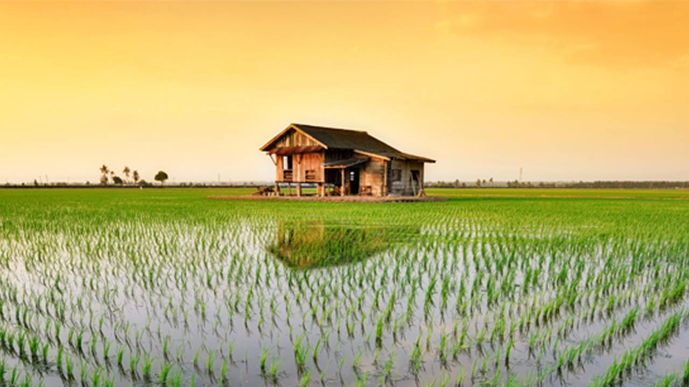
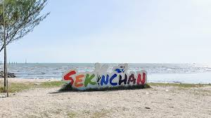
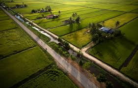
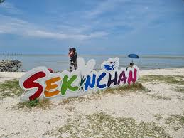
Sekinchan is one of the highest-yielding rice production areas in Malaysia, utilizing a unique environment to maximize growth.
The flooded fields act as seasonal wetlands, supporting a variety of bird species, aquatic life, and beneficial insects that maintain the soil's health.
A sophisticated network of canals ensures a steady water supply, reflecting human ingenuity in managing natural water cycles for agriculture.
As a major rice producer, Sekinchan's ecosystem stability is directly linked to the national food supply and economic resilience.
The western edge of Sekinchan borders the Straits of Malacca, creating a rich marine interface.
The Bagan fishing village demonstrates a sustainable relationship with the sea, where traditional methods are still practiced alongside modern needs.
Preserving the coastline is essential to protect the mangrove remnants that act as natural buffers against tides and storms.
Despite its beauty, Sekinchan faces several ecological challenges that require urgent attention:
Excessive use of pesticides can seep into the water table, affecting both soil quality and local marine life.
Rising sea levels and strong currents are gradually eating away at the shoreline, threatening coastal properties.
Shifting weather patterns cause unpredictable harvest cycles, impacting the livelihood of the farmers.
Efforts are being made to transition Sekinchan into a greener, more resilient community.
Farmers are increasingly encouraged to use organic fertilizers and integrated pest management to reduce chemical dependency.
Community initiatives to reduce plastic waste and improve water treatment in the fishing ports are currently underway.
Sekinchan's tourism industry is entirely dependent on its pristine natural views.
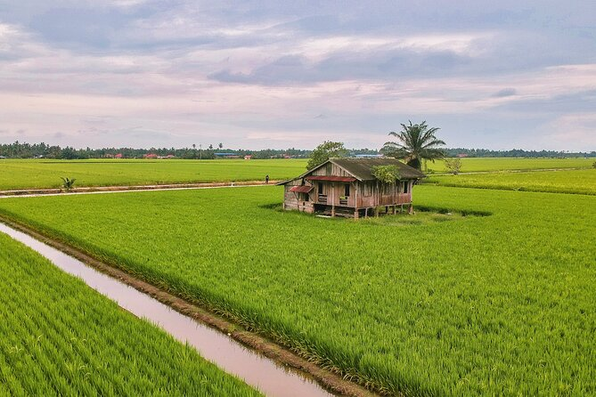
Providing a sense of peace, these fields are the primary draw for eco-tourists seeking a slow-life experience.
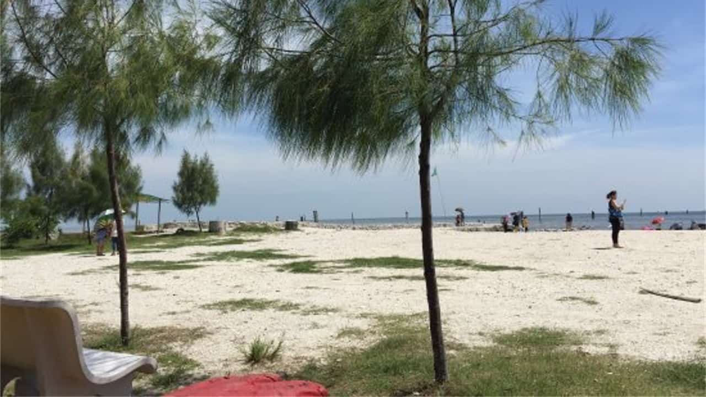
A place where tourism meets the sea; famous for the wishing tree and sunset views.
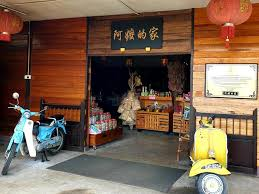
Celebrating the cultural heritage that has grown from this fertile land over generations.
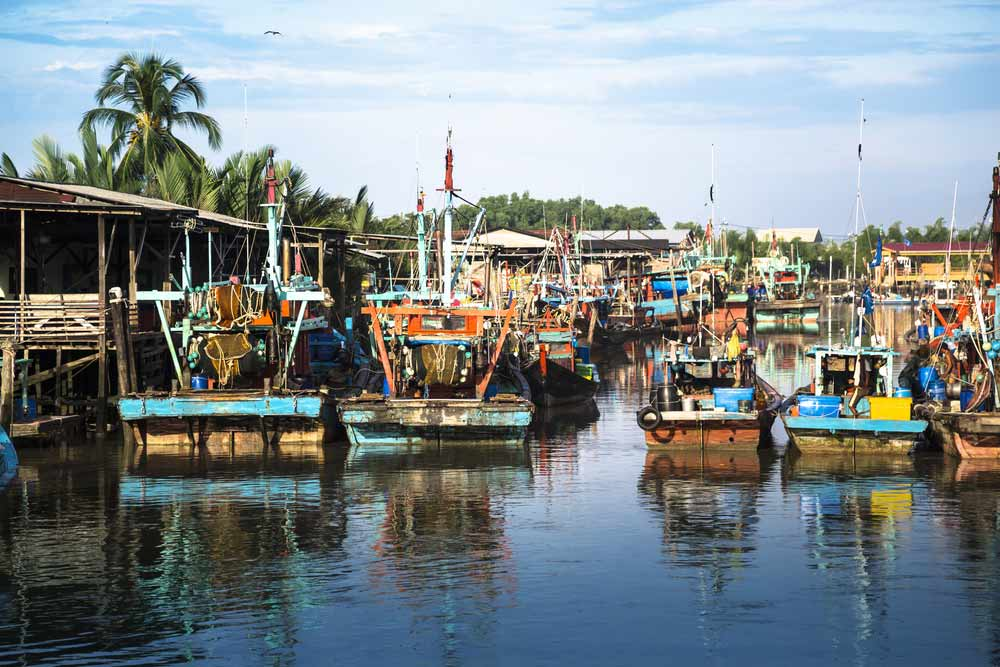
The situation of this fishing village will change to very busy during the fishing boat back to the seaport, and you will see the fisherman busy with their work to unload their catching and the workers on the jetty are busy with categorizing according to types and sizes.
We describe this fishing village as a Calm and Busy Fishing Village.
The Bagan fishing village has new shophouses, which mainly house seafood restaurants. The best seafood restaurants in town can be found in the Bagan areas.
The Terminal Sekinchan, which houses a Boeing 727 aircraft amidst the paddy fields in Parit 5, will be a new attraction for the tourism sector in Sekinchan and Selangor. This terminal, which will be developed as a Premium Outlet Cafe in the future. The area has become a focus for OOTD (Outfit of the Day) enthusiasts who come to Sekinchan because of its unique atmosphere that offers beautiful paddy field views.
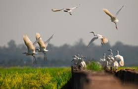
Due to the location of Sekinchan facing the Malacca Strait and in the middle of the South China Sea and Jawa Island, there are many migratory birds. Sekinchan is a coastal fishing village and a large paddy field area where you can see open country birds.
Remarkably, the winter months are worthwhile visiting.
The wetland where the bird inhabits has become a new tourist attraction, and many photographers like to visit here for migratory bird watching and photo taking.
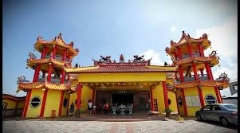
Nan Tian Temple (or called Nine Emperors God Temple) is located at Site A; this is the only temple at Site A. Nan Tian Temple ( Nan Tian Gong) was established in 1984 and extended in 2004 into today's scale. Nan Tian Temple (Nan Tian Gong) become the landmark of Site A, Sekinchan. Every 1st to 9th of the Ninth month of the Lunar Calendar, the worshipers will celebrate the birthdays of the Nine Emperor Gods (Jiu Huang Ye or 九皇爷) for ten days. The most important religious event in Sekinchan.
Nan Tian Temple is a perfect location for us to view the beauty of the paddy field; we can go up to the second floor of a tower in the temple and have a good view of the Sekinchan paddy field.
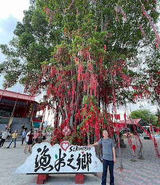
The entire tree is tangled with hundreds of red ribbons (that represents all the wishes), and is really quite a pretty sight. The Chinese Temple stands right next to the tree; where you can perform prayers, and also obtain a strand of red ribbon to make your wish. The threads are free; but there’s a donation box right next to it. You can then write your name and wishes on the cloth (a table and marker pens are provided)
Sekinchan stands as a testament to the symbiotic relationship between humans and nature. To ensure its future as a leader in agriculture and a sanctuary for travelers, we must prioritize the protection of its environment today.